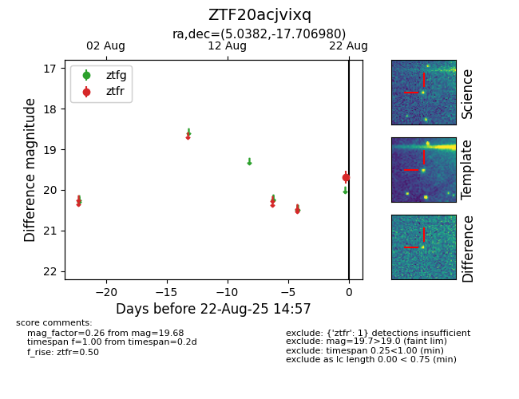

Target ZTF20acjvixq at 2025-08-22 15:31, see:
FINK: fink-portal.org/ZTF20acjvixq
Lasair: lasair-ztf.lsst.ac.uk/objects/ZTF20acjvixq
ALeRCE: alerce.online/object/ZTF20acjvixq
alt names
ZTF20acjvixq (ztf,alerce)
coordinates:
equatorial (ra, dec) = (5.0382,-17.70698)
galactic (l, b) = (83.8554,-78.13213)
photometry
last ztfr=19.68
1 ztfr detections
